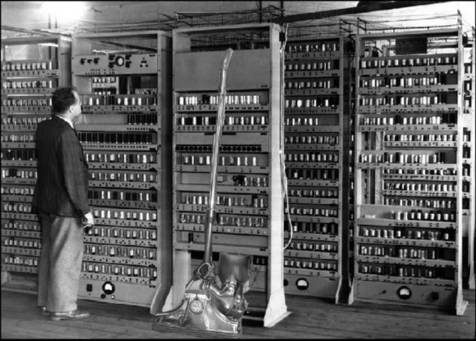

PRVA GENERACIJA RAČUNALNIKOV (1940 - 1956)
Značilnosti tega obdobja so:
- Računalniki so bili takrat še zelo veliki, nezanesljivi, nezmogljivi,
- porabljali pa so veliko energije.
- Programiranje in vnašanje podatkov je potekalo ročno, prek stikal in je bilo zelo zamudno.
- Naenkrat je bil računalnik zmožen opravljati le eno operacijo.
- Uporabljala so se vezja realizirana z elektronkami, pomnilnike s katodno cevjo in magnetne bobne kot spomin.
Kratek zgodovinski pregled razvoja računalnikov
Leta 1938 je Mark Zuse v računalništvo uvedel dvojiško kodiranje podatkov s prvim elektronsko-mehanskim digitalnim računalnikom imenovanim Z1. S tem se je pričel razvoj digitalnih računalnikov, ki so bili zanesljivejši od analognih.

Slika 6: Z1

Slika 7: Z1 od znotraj
-
Leta 1941 je luč sveta ugledal elektromehanski stroj Z3 , ki je bil prvi programsko vodeni računalnik. Ukaze je prejemal preko luknjanih kartic oz. traku. Za vnos podatkov so uporabljali tipkovnico, rezultat je bil v numerični obliki viden s pomočjo žarnic na posebnem zaslonu.

Slika 8: Z3
-
Seveda so tudi Britanci razvijali svoj lasten računalnik imenovan Colossus. Razvijali so ga med letoma 1943 in 1945. Bil je prvi elektronsko programirljiv računalnik. Uporabljali so ga za dešifriranja nemških kod med drugo svetovno vojno.

Slika 9: Britanski Colossus

Slika 10: Rekonstrukcija Britanskega Colossusa
-
Leta 1946 so razvili računalnik ENIAC (Electronic Numerical Integrator and Calculator – elektronski numerični integrator in računalo). Bil je daljši od 30 metrov, visok 3 metre in širok 1 meter. Tehtal je 30 ton. Sestavljen je bil iz približno 18.000 elektronk ter 1500 relejev. Bil je prvi računalnik vrez mehanskih delov. Bil je 1000-krat hitrejši kot vsi tedanji stroji. Problem tega stroja poleg velikost je bila poraba električne energije in nezmožnost shranjevanja podatkov.

Slika 11: ENIAC
-
John Von Neumann je leta 1945 predstavil koncept EDVAC (Electronic Discrete Variable Automatic Computer – Elektronski diskretni spremenljivi avtomatski računalnik). Vseboval je pomnilnik s shranjenim programom in centralno procesno enoto (CPE). Sestavljen je bil iz približno 3000 elektronk.

Slika 12: EDVAC